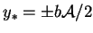
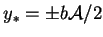
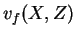
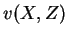
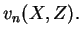
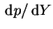

Since  is odd in
is odd in  , its integral
over the section is zero and the only contribution to a net vertical
flow rate
comes from
, its integral
over the section is zero and the only contribution to a net vertical
flow rate
comes from  . If the physical system of finite
. If the physical system of finite  , modelled by
equations (7.7)-(7.12)
when
, modelled by
equations (7.7)-(7.12)
when  is large, has
solid surfaces at
, the net vertical flow rate must vanish
to satisfy conservation of mass (2.52) so that:
is large, has
solid surfaces at
, the net vertical flow rate must vanish
to satisfy conservation of mass (2.52) so that:
| (7.29) | |||
|  | (7.30) | ||
|  |  | (7.31) |
A similar line of reasoning leads to the conclusion that
 is
uniform in the case of a duct, where the planes  now
represent orifices. Indeed,
is proportional to the net vertical flow rate
(Dryden et al. 1956, p. 197).
now
represent orifices. Indeed,
is proportional to the net vertical flow rate
(Dryden et al. 1956, p. 197).